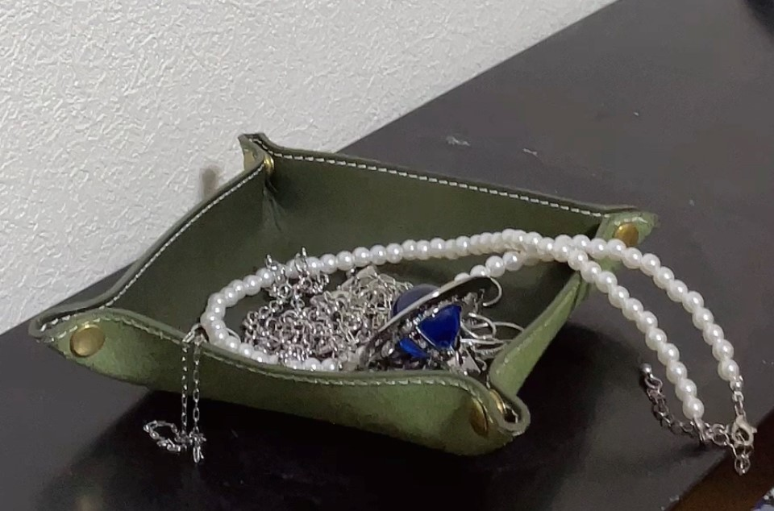
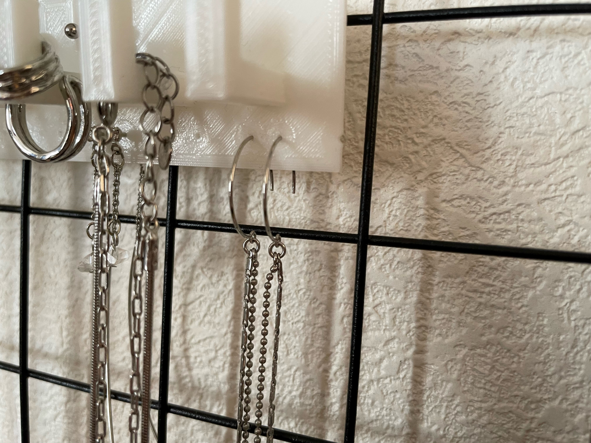
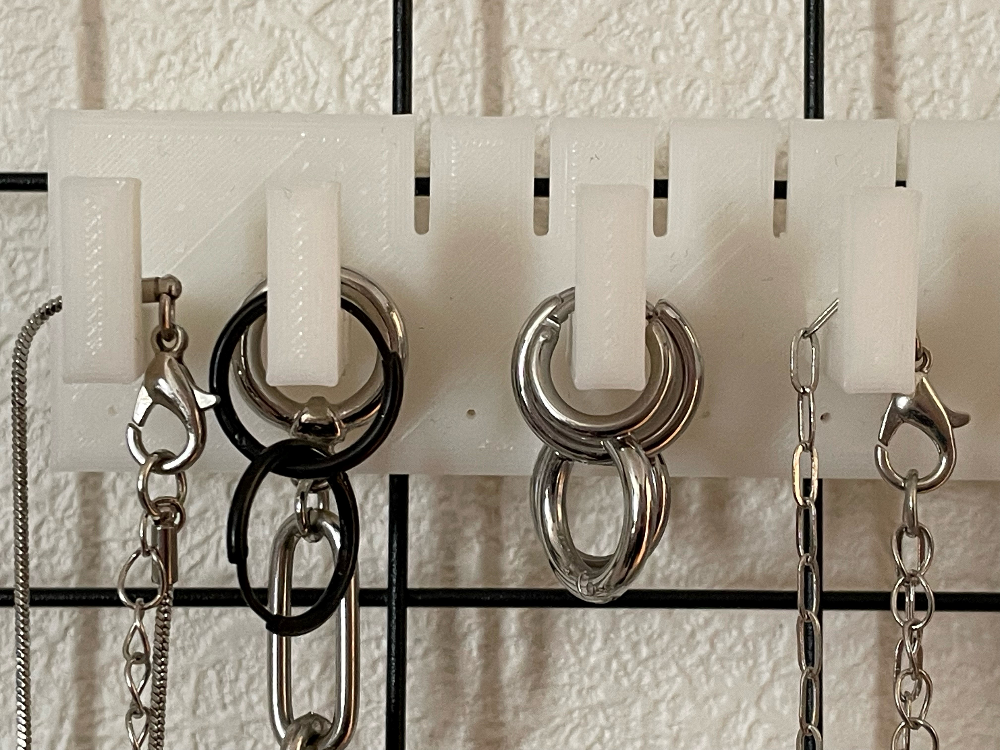

デジタルファブリケーション
第5回 最終課題
［問］ネックレスやピアスなどのアクセサリーを使っていないときどうしてますか？
［私］受け皿みたいなものに入れている。

［世間］ぐちゃぐちゃやん…
そんなお悩みをまるっと解決
商品名：アクセサリーオンザウォール
アクセサリーを空中に吊るすことで、スッキリして見える°˖✧˖°［ここにいいヲンナがいます］

心なしかアクセサリーたちも喜んでいるようにみえる！
感想
ミリ単位の設計がとても大変だった。

↑この下の穴にリングピアスを通せるようにする予定でったが穴が思ったよりも小さく通すことができなかったため気持ち大きめの穴を作るべきだった。

ひとまずネックレスをかけるところにリングピアスもかけた。
下の穴にかけられるように直径をキリなどを使って広げようと思う。